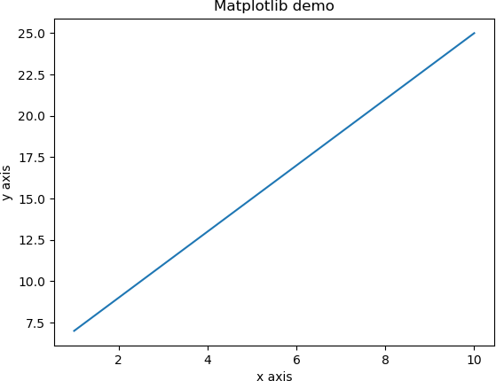
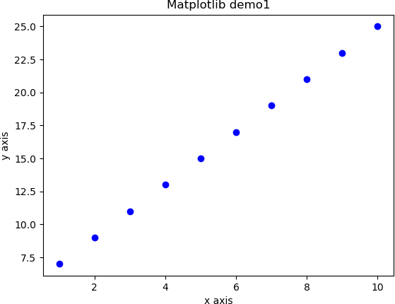
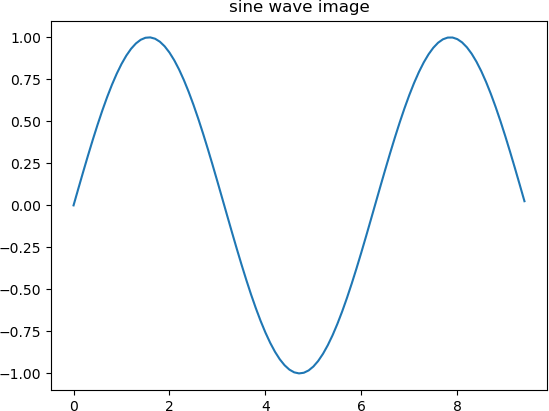
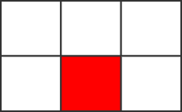
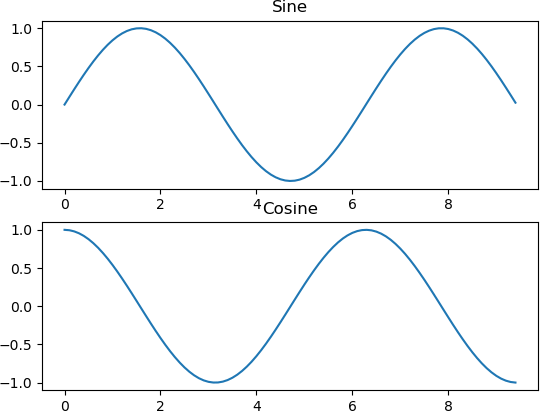
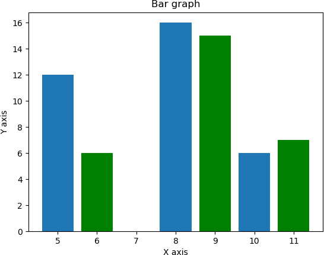
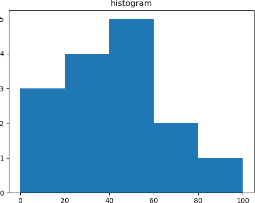

NumPy和Matplotlib绘图
Matplotlib 是 Python 的绘图库，它经常与 NumPy 一起使用，从而提供一种能够代替 Matlab 的方案。不仅如此 Matplotlib 还可以与 PyQt 和 wxPython 等图形工具包一起使用。
Matplotlib 最初由 John D. Hunter 编写，目前，它的最新的版本是 3.3.1，最后一个支持 Python 2 的版本是 2.2.5 。您可以通过 Python 包管理器 pip 来安装 Matplotlib，命令如下：
您可以向 plot() 函数中添加格式化字符，来实现不同样式的显示或标记。 下表列举了常用的格式化字符：
同时 Matplotlib 还定义了一些颜色字符，如下所示：
如果想要以圆点的样式，来代替图 1 中的线条样式，那么可以使用“ ob”作为 plot() 的格式化字符。如下所示：
下面示例是在同一画布中绘制正弦和余弦图像，代码如下：
histogram() 函数有两个返回值，分别是 hist 与 bin_edges，分别代表直方图高度值与 bin 数值区间范围， 函数的语法格式如下：
Matplotlib 最初由 John D. Hunter 编写，目前，它的最新的版本是 3.3.1，最后一个支持 Python 2 的版本是 2.2.5 。您可以通过 Python 包管理器 pip 来安装 Matplotlib，命令如下：
pip3 install matplotlib
安装成功后，我们可以使用下面的引包方式，将其导入：from matplotlib import pyplot as plt
绘制线性函数图像
Matplotlib 的子模块模块 pyplot 是用来绘制 2D 图像的重要模块。下面示例绘制了函数 y = 2x + 5 的图像：
import numpy as np
from matplotlib import pyplot as plt
x = np.arange(1,11)
y = 2 * x + 5
#绘制坐标标题
plt.title("Matplotlib demo")
#绘制x、y轴备注
plt.xlabel("x axis")
plt.ylabel("y axis")
plt.plot(x,y)
plt.show()
输出结果如下：

图1：Matplotlib绘制线性图
图1：Matplotlib绘制线性图
您可以向 plot() 函数中添加格式化字符，来实现不同样式的显示或标记。 下表列举了常用的格式化字符：
| 字符 | 描述 |
|---|---|
| '-' | 实线样式 |
| '--' | 短横线样式 |
| '-.' | 点划线样式 |
| ':' | 虚线样式 |
| '.' | 点标记 |
| ',' | 像素标记 |
| 'o' | 圆标记 |
| 'v' | 倒三角标记 |
| '^' | 正三角标记 |
| '<' | 左三角标记 |
| '>' | 右三角标记 |
| '1' | 下箭头标记 |
| '2' | 上箭头标记 |
| '3' | 左箭头标记 |
| '4' | 右箭头标记 |
| 's' | 正方形标记 |
| 'p' | 五边形标记 |
| '*' | 星形标记 |
| 'h' | 六边形标记 1 |
| 'H' | 六边形标记 2 |
| '+' | 加号标记 |
| 'x' | X 标记 |
| 'D' | 菱形标记 |
| 'd' | 窄菱形标记 |
| '|' | 竖直线标记 |
| '_' | 水平线标记 |
同时 Matplotlib 还定义了一些颜色字符，如下所示：
| 字符 | 颜色 |
|---|---|
| 'b' | 蓝色 |
| 'g' | 绿色 |
| 'r' | 红色 |
| 'c' | 青色 |
| 'm' | 品红色 |
| 'y' | 黄色 |
| 'k' | 黑色 |
| 'w' | 白色 |
如果想要以圆点的样式，来代替图 1 中的线条样式，那么可以使用“ ob”作为 plot() 的格式化字符。如下所示：
import numpy as np
from matplotlib import pyplot as plt
x = np.arange(1,11)
y = 2 * x + 5
plt.title("Matplotlib demo1")
plt.xlabel("x axis")
plt.ylabel("y axis")
plt.plot(x,y,"ob")
plt.show()
输出结果如下图：

图2：Matplotlib绘制圆点图
图2：Matplotlib绘制圆点图
绘制正弦波图
您也可以使用 Matplotlib 生成正弦波图。示例如下：
import numpy as np
import matplotlib.pyplot as plt
# 计算正弦曲线上的x和y坐标
x = np.arange(0, 3 * np.pi, 0.1)
y = np.sin(x)
plt.title("sine wave image")
# 使用matplotlib制图
plt.plot(x, y)
plt.show()
输出结果：

图3：Matplotlib绘图正弦图
图3：Matplotlib绘图正弦图
subplot()
subplot() 允许您在同一画布中的不同位置绘制多个图像，可以理解为对画布按行、列分割，函数的语法格式如下：plt.subplot(nrows, ncols, index, **kwargs)
参数说明：该函数使用三个整数描述子图的位置信息，这三个整数是行数、列数和索引值（此处索引值从1开始），子图将分布在设定的索引位置上。从右上角增加到右下角。比如，plt.subplot(2, 3, 5) 表示子图位于 2 行 3 列 中的第 5 个位置上。

图4：subplot画布分割
图4：subplot画布分割
下面示例是在同一画布中绘制正弦和余弦图像，代码如下：
import numpy as np
import matplotlib.pyplot as plt
#计算正弦和余弦曲线上的点的 x 和 y 坐标
x = np.arange(0, 3 * np.pi, 0.1)
y_sin = np.sin(x)
y_cos = np.cos(x)
#绘制subplot 网格为2行1列
#激活第一个 subplot
plt.subplot(2, 1, 1)
#绘制第一个图像
plt.plot(x, y_sin)
plt.title('Sine')
#将第二个 subplot 激活，并绘制第二个图像
plt.subplot(2, 1, 2)
plt.plot(x, y_cos)
plt.title('Cosine')
#展示图像
plt.show()
输出结果如下：

图5：Matplotlib绘制波形图
图5：Matplotlib绘制波形图
bar()柱状图
pyplot 子模块中提供了 bar() 函数来生成柱状图。下面示例代码，生成了两组数据的柱状图：
from matplotlib import pyplot as plt
#第一组数据
x1 = [5,8,10]
y1 = [12,16,6]
#第二组数据
x2 = [6,9,11]
y2 = [6,15,7]
plt.bar(x1, y1, align = 'center')
plt.bar(x2, y2, color = 'g', align = 'center')
plt.title('Bar graph')
#设置x轴与y轴刻度
plt.ylabel('Y axis')
plt.xlabel('X axis')
plt.show()
输出结果：

图6：Matplotlib绘制柱状图
图6：Matplotlib绘制柱状图
numpy.histogram()
直方图是一种表示数据概率分布的常用图形。NumPy 提供了 histogram() 函数，它以直方图的形式表示一组数据的概率分布值。histogram() 函数有两个返回值，分别是 hist 与 bin_edges，分别代表直方图高度值与 bin 数值区间范围， 函数的语法格式如下：
histogram(array,bins=10,range=None,weights=None,density=False)
示例如下：import numpy as np a = np.arange(8) hist, bin_edges = np.histogram(a, density=True)输出结果如下：
his： [0.17857143 0.17857143 0.17857143 0. 0.17857143 0.17857143 0. 0.17857143 0.17857143 0.17857143] bin_edges [0. 0.7 1.4 2.1 2.8 3.5 4.2 4.9 5.6 6.3 7. ]numpy.histogram() 将输入数组 a 和 bins 作为两个参数，其中 bins 数组的连续元素作为 bin 区间的边界值。示例如下：
import numpy as np a = np.array([22,87,5,43,56,73,55,54,11,20,51,5,79,31,27]) np.histogram(a,bins = [0,20,40,60,80,100]) hist,bins = np.histogram(a,bins = [0,20,40,60,80,100]) print(hist) print(bins)输出结果如下：
返回hist直方图值： [3 4 5 2 1] 返回bin区间边缘值： [0 20 40 60 80 100]
plt()
pyplot 子模块的 plt() 函数将一个输入数组和 bins 数组作为参数，并将其输出为直方图。示例如下：
from matplotlib import pyplot as plt
import numpy as np
a = np.array([22,87,5,43,56,73,55,54,11,20,51,5,79,31,27])
plt.hist(a, bins = [0,20,40,60,80,100])
plt.title("histogram")
plt.show()
输出图像如下所示：

图7：Matplotlib直方图
图7：Matplotlib直方图
关注公众号「站长严长生」，在手机上阅读所有教程，随时随地都能学习。内含一款搜索神器，免费下载全网书籍和视频。

微信扫码关注公众号